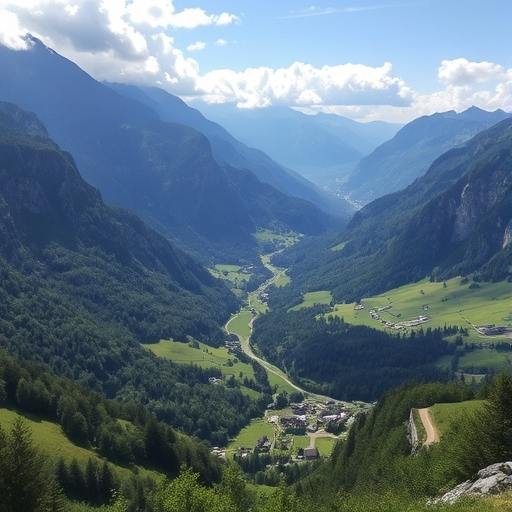
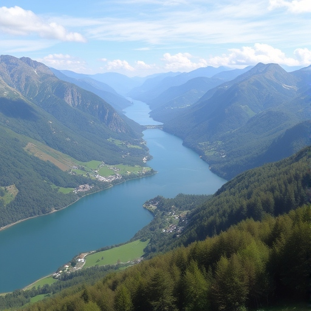
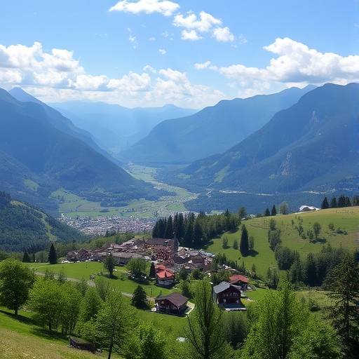
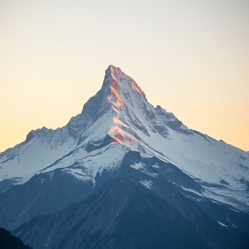
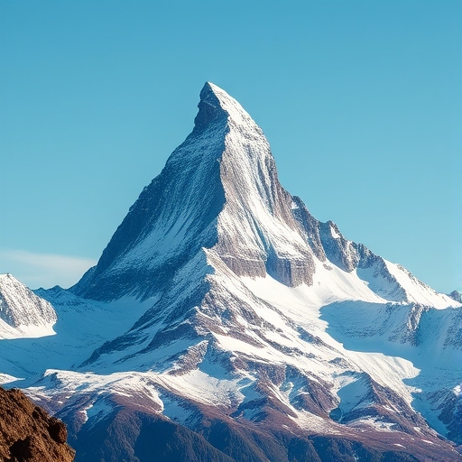
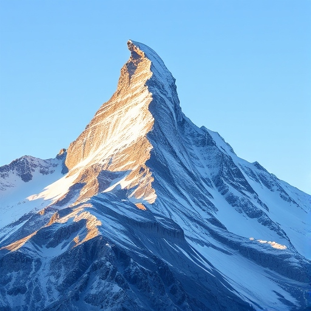
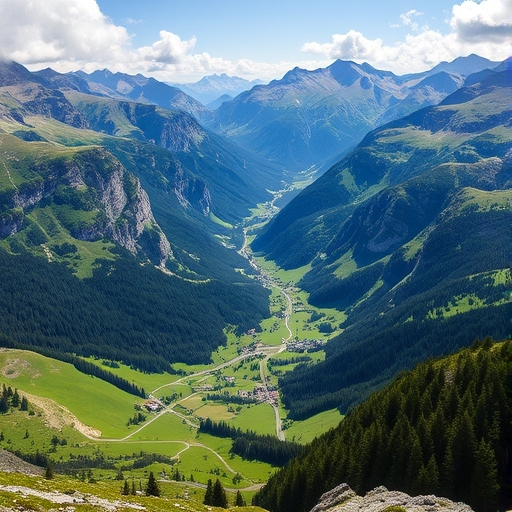
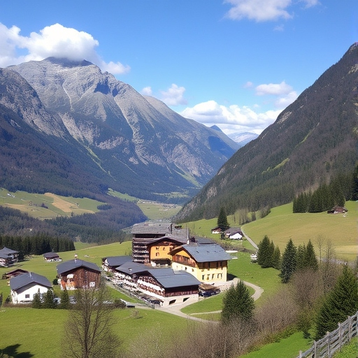
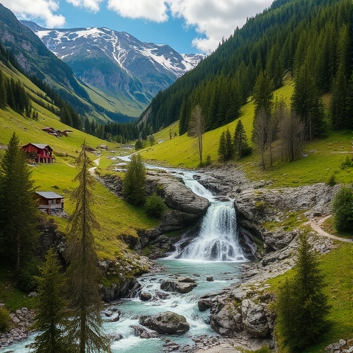

Tůry po horách v kanotnu Ticino
Navštivte Alpy v malebném kantonu Ticino
Jezera s neuvěřitelnou barvou. Siluety italských Alp. V údolích městečka s italskou atmosférou.



Zlatá švýcarská alpská cesta
Z Zermattu těsně pod Matternhorn až pod Dufourspitze
Navštívíte jedno z nejznámějších středisek v Alpách. Následně vyjde až pod vrchol Matternornu, jedné z nejznámějších hor světa. Tůru zakončíte pod nejvyšší horou Švýcarksa



Po horách v kantonu Graubünden
150 km po horách. 9 dnů
Poznáte atmosféru největšího horského kantonu ve Švýcarsku. Bude přecházet malebnými údolími pod majestátními horami, ubytováni budete v klasických horských chatkách


